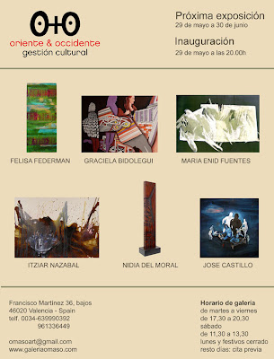
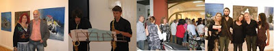
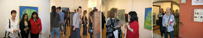

Exposición del 29-05-2009 a 30-06-2009
viernes, 29 de mayo de 2009
{kind=link}

La Galería O+O tiene el placer de presentar la última exposición de la temporada organizada por Oriente & Occidente Gestión Cultural. Una muestra colectiva formada por los trabajos de seis artistas: Felisa Federman, Graciela Bidolegui, José Castillo, Nidia Delmoral, Itziar Nazabal y María Enid. Una exhibición de pintura y escultura que podrá visitarse hasta finales de junio.
En la exposición podemos ver una amplia gama de artistas latinoamericanos, una representación de trabajos plásticos ligados a Argentina, Costa Rica, Venezuela y Colombia; acompañados por las obras de la artista navarra Itziar Nazabal. Un gran abanico de composiciones, tonalidades y texturas que van desde la pintura figurativa hasta la abstracción pasando por el surrealismo e impresionismo; que utilizan materiales para sus creaciones como el papel hecho a mano, la madera, la fibra, la tela, el óleo y la acuarela. Obras que indagan y reflexionas sobre la concepción artística, la identidad y la naturaleza.
{kind=link}


FELISA FEDERMAN
Felisa Federman graduada en la Academia Nacional de Bellas Artes, Buenos Aires y en tejidos, papel hecho a mano y construcción en fibra en la Escuela Nacional de Bellas Artes, Buenos Aires (Argentina), reside y trabaja en Maryland (EE.UU) desde el año 1991. Ha participado en más de 40 exhibiciones en EE.UU, Brasil, Italia, Francia y Argentina. En su pintura utiliza técnicas textiles y ensamblajes, creando una atmósfera codificada mediante la exploración del entorno cotidiano. El uso de fibra como vehículo responde a la búsqueda de una visión única; existe una selección de texturas, volúmenes y estructuras en las que el papel hecho a mano juega un papel importante creando entidades misteriosas. La serie "Código de Barras" representa conceptos como la identidad, la clasificación o el medio ambiente. Obras que se centran en la interrelación entre la naturaleza y la humanidad. Millones de productos se identifican por cambios mínimos en los códigos de barras. Así como los escáneres de códigos de barras puede reconocer estos productos, nosotros podemos distinguir nuestro alrededor por las experiencias anteriores, expectativas y predisposiciones. Pinturas abstractas de técnica mixta, superposiciones y montajes dispuestas para ser descifradas.
GRACIELA BIDOLEGUI
La artista plástica Graciela Bidolegui, nacida en Buenos Aires (Argentina), ha hecho del arte su vida trabajando como diseñadora gráfica, profesora de artes plásticas, ilustradora y artista. Cuenta con más de 150 exposiciones en centros de arte de EE.UU, Alemania Holanda, Argentina, etc. Sus composiciones nos ofrecen de una forma casi monocroma de líneas ondulantes entrecruzadas, que forman curvas y espirales como si fueran batidas por el viento. Figuras que parecen danzar dentro del cuadro con un movimiento pausado e hipnotizador. El resultado es un juego mágico y poético que encuentra sus límites en la imaginación de cada observador. La realidad se fusiona con lo ficticio, mezclándose el sueño y la vigilia. Una pintura inquietante que en ocasiones parece librar una batalla entre lo figurativo y lo abstracto dentro de un mundo surrealista e innovador. Obras que indagan y reflexionan en lo más profundo del ser humano para comprender al hombre en su totalidad.
JOSE CASTILLO
El joven artista costarricense José Castillo (1984, San José) de formación principalmente autodidacta, se inició en la pintura a la temprana edad de 9 años y hasta la fecha ha protagonizado una veintena de exposiciones dentro y fuera de su país. Sus obras respiran una atmósfera surrealista que perturba al espectador. Desarrolla una composición en la que su técnica depurada se funde con una abstracción sutil, extrae los elementos esenciales de una imagen figurativa para más tarde deformarlos y modificándolos en busca del estremecimiento de lo psíquico. De este modo, se produce una mezcla de sueños y realidad donde quedan liberadas pesadillas de la infancia y arquetipos del inconsciente. Un baile de monstruos y fantasmas promovido por el caos, la violencia y la anarquía, donde el cuerpo femenino tiene un carácter primordial. Si algo caracteriza las obras de José Castillo es la modificación de la percepción que presentan bajo una marcada coherencia conceptual. Pinturas de aquello que existe pero no se deja ver, tan sólo podemos encontrarlo en nuestro interior. Libertad, seducción y fantasía expresadas con una amplitud gestual y cromática de rojos, azules y lilas.
NIDIA DELMORAL
Nacida en Maracay (Venezuela), actualmente reside y trabaja en Caracas. Su obra ha sido expuesta en un gran número de museos, galerías y centros de arte de Francia, Japón, Alemania, Turquía, Maruecos, Egipto, Libia, Argentina, Venezuela, Canada, EE.UU, España, entre otros. En sus esculturas Nidia Delmoral tiende a realizar tallas de madera que se fundamentan bajo un eje vertical, sobre el cual cava y dibuja sutiles relieves y tonalidades. Piezas abstractas que nos remiten a antiguas estelas de madera y monumentos tribales. Su alto grado de verticalidad queda en unas ocasiones disminuido y en otras aumentado gracias a un leve juego de líneas curvas y rectas que componen y decoran la escultura. En ocasiones la pieza presenta aberturas en su interior aligerando el peso de su aspecto rotundo y formando un nuevo ritmo en su estructura. Formas geométricas que se unen, mezclan y superponen formando una composición equilibrada, llena de fuerza que conecta directamente con la naturaleza a través de su alma de madera.
ITZIAR NAZABAL
Itziar Nazabal (1980, Iruña) trabaja y reside en Altsasu, Navarra. Licenciada en Bellas Artes por la UPV, dedica su tiempo a la enseñanza sin descuidar la investigación y creación artística. Sus obras han podido verse en Vigo, Pamplona, París, Nimes (Francia), Brescia (Italia), Salzburg (Austria), entre otros lugares. Pintora de gran fuerza interior y plena de sensibilidad que dota a sus obras de un sereno equilibrio. Su particular plasticidad se caracteriza por una pincelada dinámica, trazos que surgen con agilidad de la poética expresionista. Una representación de lo fugaz que tiende hacia la frontera de la abstracción. Itziar Nazabal resuelve con gran maestría y asombrosa facilidad pinturas que muestran un instante, un suspiro, una vivencia. Ofrece una visión de lo representado de forma inconclusa, una imagen fresca y con gran fuerza que se fundamenta en lo esencial del momento dejando a un lado lo secundario. Composiciones de una factura suelta y vigorosa que parecen evaporarse como si de un recuerdo etéreo se tratara.
MARIA ENID
María Enid Fuentes Ramírez (Pereira, Colombia, 1959) lleva 19 años viviendo y trabajando en Turín (Italia). Su obra forma parte de colecciones privados de Colombia, Ecuador, Estados Unidos, Inglaterra e Italia. Su trabajo pictórico presenta un equilibrio entre el pasado y el futuro, fundiendo culturas diferentes con el sentimiento y recuerdo de su propia tierra. Su plan cromático de una fuerte carga emocional es determinante, convirtiéndose en ocasiones en una proyección anímica personal. El trabajo de la artista colombiana abandona todo componente figurativo en busca de la intensificación expresiva. Una pintura de pincelada suelta y con el color como protagonista que es alimentada de la amplia cultura cosmopolita, que a través de sus numerosos viajes y contacto directo con diversas culturas atesora su autora. De este modo, en sus pinturas confluyen su origen latinoamericano y su experiencia europea de una forma natural y atrayente.